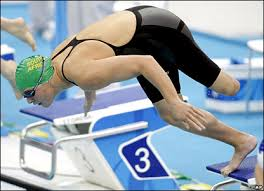

Biography
Natalie Du Toit is an Olympic swimmer from Cape Town, South Africa. She was born there on January 29, 1984, and she grew up to become a gifted competitive swimmer. At the age of 14, she began to compete in swimming on an international level.
When she was 17, however, she was hit by a car while riding her scooter back to school after leaving swim practice. The accident was bad, and she had to have her left leg amputated at the knee. This did not dampen her desire to compete in the Olympics. Approximately three months after the accident, she was able to walk again. She then started swimming again.
Du Toit qualified to compete at the 2008 Summer Olympics in Beijing, making history by being the first female amputee swimmer ever to qualify for the Olympics. South Africa chose her to carry their flag at the 2008 Summer Olympics opening ceremony in Beijing, and she also carried the flag at the opening ceremony of the 2008 Summer Paralympics in Beijing. She was the first ever disabled athlete to have this honour in an able-bodied Olympics.